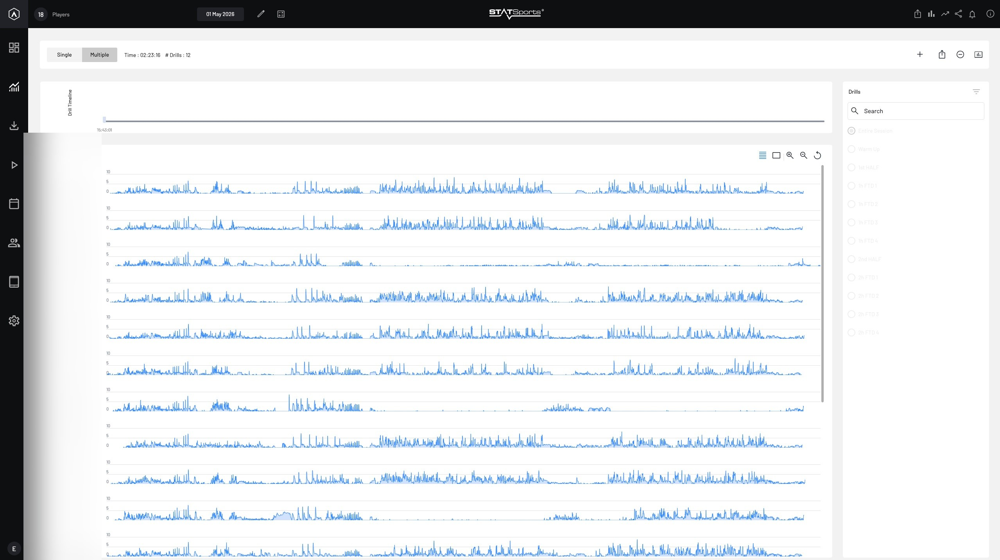
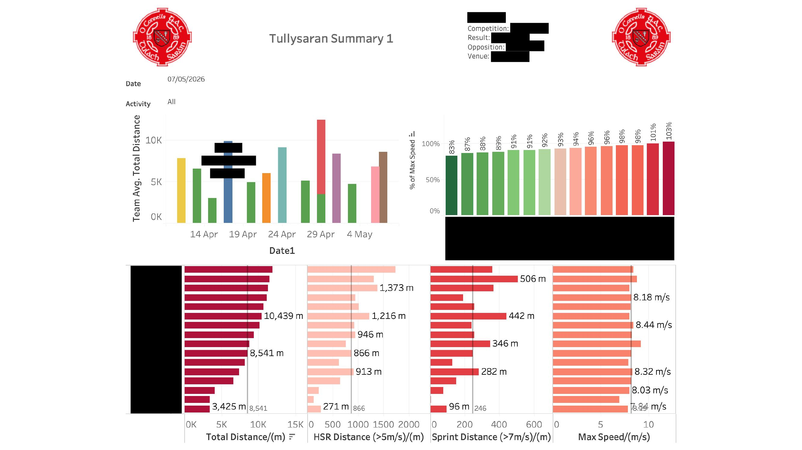
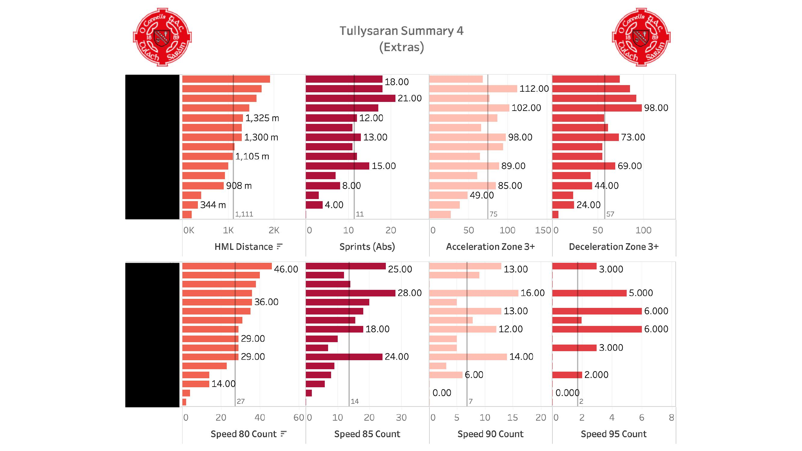
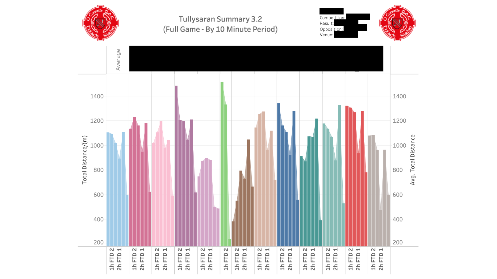
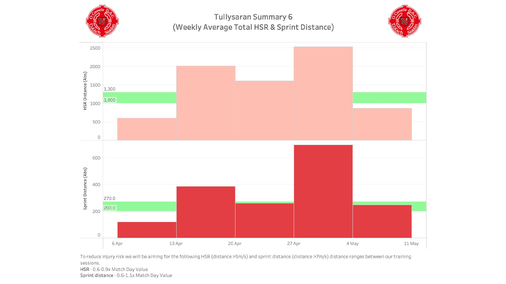

GPS Processing Pipeline for Gaelic Games
An open-source Python pipeline for processing STATSports GPS data into Tableau-ready summaries, built on evidence-informed thresholds from the sports science literature.
1. Overview & Motivation
Wearable GPS tracking devices have become essential tools in team sports, enabling practitioners to quantify training loads and monitor fatigue across a season. This pipeline was developed to process raw 10 Hz GPS data exported from STATSports units into a structured, Tableau-ready summary suitable for weekly monitoring and long-term athlete profiling.
The project originated from applied work with a GAA club, where GPS tracking was used across an entire competitive season to individualise training loads and inform match preparation. Research in elite Gaelic football has established that GPS-derived metrics can capture meaningful positional and temporal variation in match demands [7], and that running performance is a contributing factor to match outcome [9]. The underlying signal processing methods and threshold choices are grounded in the peer-reviewed literature, drawing principally on the metabolic power model of di Prampero & Osgnach [1, 2], and the injury-risk training targets proposed by Buchheit [3].
GPS analytics is widespread in professional sport but often inaccessible at grassroots level due to cost and expertise barriers. This pipeline is released to give club-level practitioners a working starting point they can adapt to their own context, with full transparency about the calculations involved.
2. Screenshots
Below are screenshots from the live deployment of this pipeline — from raw data collection in STATSports Sonra through to the Tableau dashboards used for weekly reporting. Player names and match details have been redacted.
STATSports Sonra — Raw Data View
The Sonra platform provides the raw multi-player speed traces used as input to the pipeline. Each row shows one player's speed over the full session, with drill markers overlaid on the timeline.

Tableau Dashboard — Match Summary
The main summary dashboard shows a weekly total distance timeline with match/training breakdown, per-player % of max speed reached, and individual bar charts for total distance, HSR distance, sprint distance, and peak speed.

Tableau Dashboard — Extras
The extras dashboard covers the additional metrics computed by the pipeline: high metabolic load distance, absolute sprint counts, acceleration and deceleration zone 3+ counts, and speed-band exposure (efforts at 80%, 85%, 90%, and 95% of max speed).

Tableau Dashboard — 10-Minute Period Breakdown
The 10-minute period breakdown shows how each player's total distance output changes across the match, with separate bars for each half (1h FTD = first-half ten-minute block, 2h FTD = second-half). This helps identify fatigue patterns — a steep drop-off in the second half may indicate fitness issues or the need for tactical substitution.

Tableau Dashboard — Weekly HSR & Sprint Targets
Weekly accumulated HSR and sprint distances are plotted against the Buchheit et al. (2023) training targets. The green bands represent the recommended ranges (0.6–0.9× match HSR, 0.6–1.1× match sprint distance), with red bars showing actual weekly totals. Weeks where bars exceed the green band may indicate overloading; weeks below it suggest under-exposure.

3. Quick Start
The code requires Python 3.9+ and three dependencies. Clone the repository, install requirements, point the pipeline at a raw session folder, and run.
# Install dependencies
pip install numpy pandas scipy
# Navigate to the project directory
cd gps-pipeline
# Run the pipeline on a session folder
python run.py --folder "~/Desktop/2026-04-11-Match-RawDataExtended"Raw Data Folder Convention
STATSports exports one folder per session. The pipeline expects folders named using the format
YYYY-MM-DD-{Activity}-RawDataExtended, where {Activity} is either
Match or Training. Inside that folder, each player's data should be in CSV files
following the pattern YYYY-MM-DD-Initials-Surname-DrillName.csv, with one file per drill.
A mandatory Entire-Session file per player provides the full-resolution data from which drill
windows are extracted.
Directory Layout
├── config.py ← all paths & thresholds — edit this
├── processing.py ← signal processing functions
├── pipeline.py ← Stage 1 (drill_calculator) + Stage 2 (summariser)
├── build_absolute_data.py ← rolling max speed/HR per player
├── build_benchmarks.py ← season benchmark builder
├── schedule_manager.py ← CLI for match/training schedule
├── run.py ← entry point
│
├── research_data/ ← merged per-session CSVs (auto-created)
├── tableau_data/ ← final summary CSV for Tableau (auto-created)
└── team_schedules/ ← schedule CSV & benchmarks
4. Pipeline Architecture
The pipeline operates in two sequential stages, both orchestrated from run.py. Separating
them allows you to re-run the summariser independently (for example, after updating the absolute data
file with a new player's max speed) without re-processing the raw CSVs.
STATSports Export
Per-player CSV files at 10 Hz, one file per drill + Entire Session
drill_calculator
Time-window extraction, deduplication, Butterworth filtering, merge to single CSV
summariser
All metrics computed per player × drill, appended to Tableau summary CSV
Tableau / Dashboard
Summary CSV ready for visualisation and weekly monitoring
Stage 1: drill_calculator
Reads all CSVs from a raw session folder. For each player, the Entire-Session file is loaded
first as the master time-series. Individual drill files are then used purely to define time windows — the
corresponding segment is extracted from the full-resolution session data. This avoids discrepancies
between drill-level and session-level recordings.
A critical step at this stage is time-based deduplication. STATSports exports 10 speed readings per 1-second timestamp (the device samples at 10 Hz but the time column has 1 Hz resolution). Keeping all duplicates would inflate distance metrics by roughly 10×. The pipeline sorts by time and retains only the first reading per timestamp, then applies a low-pass Butterworth filter to the resulting speed series.
Stage 2: summariser
Loads the merged CSV produced by Stage 1, resolves each player's rolling absolute-best values (max speed, max HR) from the absolute data file, then computes the full suite of metrics described in Section 4 below. Results are appended (not overwritten) to a cumulative Tableau summary CSV, building a longitudinal record across the season.
5. Metric Definitions & Scientific Basis
5.1 Signal Processing
Raw speed data is smoothed using a 1st-order Butterworth low-pass filter with a 1 Hz cutoff,
applied via scipy.signal.filtfilt for zero phase-shift. This removes high-frequency
noise from the GPS signal while preserving the timing and magnitude of genuine speed changes.
Distance is then computed by trapezoidal integration of the filtered speed series.
As Malone et al. [6] note, device sampling rate, satellite signal quality, and
data-filtering methods all affect the accuracy of GPS-derived metrics, and practitioners should
be aware of these factors when interpreting outputs.
5.2 Metabolic Power & High Metabolic Load Distance
The metabolic power model, originally proposed by di Prampero et al. [1] and adapted for team sports by Osgnach et al. [2], estimates instantaneous energy cost from GPS-derived speed and acceleration. The model treats acceleration as equivalent to running on a gradient, computing an "equivalent slope" and "equivalent mass" to derive the energy cost of each time-step. High Metabolic Load (HML) distance is defined as the distance covered while metabolic power exceeds 25.5 W/kg — a threshold that approximates the upper boundary of aerobic energy supply in intermittent field sports [2]. A grass-surface scaling factor of 1.29 is applied to account for the greater energy cost of locomotion on natural turf compared to a treadmill [1].
5.3 High-Speed Running & Sprint Detection
High-speed running (HSR) is quantified using both absolute (≥5.0 m/s) and relative (≥70% of the player's validated maximum speed) thresholds. The relative approach accounts for inter-individual differences in physical capacity and is considered more physiologically meaningful for monitoring purposes [4]. Research in elite Gaelic football has shown that total distance and high-speed running vary significantly by playing position, with half-backs, midfielders, and half-forwards typically covering the greatest distances [7, 11].
Sprint detection uses a hysteresis model: an effort begins when speed exceeds the entry threshold and ends only when speed drops below 70% of that entry threshold. This prevents a single sustained effort from being fragmented into multiple counted sprints by brief speed fluctuations around the threshold.
5.4 Speed-Band Exposure
The pipeline tracks the number of efforts and distance covered above 80%, 85%, 90%, and 95% of a player's maximum speed. Tracking exposure at near-maximal velocities provides a more granular picture than a single binary sprint threshold and aligns with evidence that regular exposure to high-percentage-of-max speeds may be protective against soft-tissue injury [4]. The "days since last hit" metric for each band flags when a player has gone an extended period without reaching a given intensity, which may indicate detraining risk or the need for supplementary speed work.
5.5 Injury-Risk Training Targets
Weekly training targets for HSR and sprint distance are derived from the work of Buchheit et al. [3], who used machine-learning analysis across multiple elite football clubs to identify the training-dose windows associated with the lowest injury rates. Their findings suggest that accumulating HSR distances of 0.6–0.9× match HSR load and sprint distances of 0.6–1.1× match sprint load during a standard training week is associated with reduced non-contact injury incidence.
The pipeline generates per-player targets by applying these multipliers to each player's match benchmark — either
a trimmed mean of their 2025 season match outputs (if build_benchmarks.py has been run) or, failing
that, the most recent session value as a fallback. The "Benchmark Source" column flags which method was used,
so practitioners can distinguish between stable season benchmarks and single-session estimates.
5.6 Force-Velocity Profiling
In-game force-velocity profiles are estimated from simultaneous speed and acceleration data during positive-acceleration phases. The pipeline bins the speed–acceleration scatter into 0.2 m/s windows, selects the two highest acceleration values per bin, fits a linear regression, removes outliers beyond 1.96 standard deviations, and refits. The resulting slope and intercepts yield estimates of maximum speed (S Max), maximum acceleration (A Max), peak power (P Max), ballistic power (P B — the area under the F-v curve), the force-velocity slope (S Fv), and the perpendicular distance from the origin to the F-v line (d Fv) [4].
5.7 Heart Rate Zones
Five heart-rate zones are defined as equal-width bands from 50% to 100% of each player's maximum HR. Distance covered and time spent in each zone are reported. Max HR values are drawn from the rolling absolute-data file, which tracks lifetime bests with anomaly detection — if a player's recorded max speed exceeds their second-highest by more than 1.2 m/s, the system flags it as a potential GPS artefact and uses the second value for all relative calculations.
5.8 Acceleration & Deceleration
Zone 3+ acceleration and deceleration counts capture sustained efforts exceeding ±2 m/s² for at least 0.5 s. The minimum-duration requirement filters out transient spikes that may reflect sensor noise rather than genuine mechanical loading events. Research in elite soccer has demonstrated that accelerations and decelerations contribute 7–10% and 5–7% of total player load respectively, highlighting that traditional distance-only metrics may underestimate the mechanical demands of match-play [13].
Summary of Output Metrics
| Category | Metrics | Basis |
|---|---|---|
| Total Load | Total Distance, Distance/min, HML Distance, HMLD/min | di Prampero [1], Osgnach [2] |
| High-Speed Running | HSR Distance (Abs & Rel), HSR/min | McGleenan [4] |
| Sprint Detection | Sprint count & distance (Abs & Rel), hysteresis model | McGleenan [4] |
| Speed Exposure | Count & distance at 80/85/90/95% max, days-since tracking | — |
| Training Targets | HSR & Sprint weekly targets (0.6–0.9× / 0.6–1.1× match) | Buchheit [3] |
| Force-Velocity | S Max, A Max, P Max, P B, S Fv, d Fv | McGleenan [4] |
| Heart Rate | 5-zone distance & time, Max HR, Avg HR | — |
| Acceleration | Zone 3+ Accel & Decel counts (≥±2 m/s², ≥0.5 s) | — |
6. Limitations & Considerations
The dashboards and metrics produced by this pipeline are practical tools for informing training decisions, not ground-truth measurements. The following limitations should be kept in mind when interpreting the data.
6.1 GPS Signal Accuracy
Consumer-grade 10 Hz GPS has inherent positional error, typically ±1–2 m per sample, which propagates into speed, acceleration, and all derived metrics. The Butterworth low-pass filter reduces high-frequency noise but does not eliminate systematic error. Signal quality degrades further in covered or enclosed venues, near tall structures, and in poor weather conditions. Malone et al. [6] provide a comprehensive review of the factors affecting GPS data quality, including satellite availability, horizontal dilution of precision, and firmware-level processing differences between manufacturers — all of which are largely invisible to the end user. STATSports Apex Pro series units have been validated for data reliability and accuracy independently through the FIFA Quality Programme against the industry gold standard Vicon motion capture system.
6.2 What Is Max Speed?
A player's maximal potential speed output will vary over the course of a season. Various factors may affect this, including but not limited to: injury and recovery status, playing surface (artificial vs natural grass, firm vs soft ground), time of year, pitch dimensions, tactical set-up, and position or role. It is important to consider how an isolated maximal speed effort can be interpreted throughout the year. One approach is to use the highest speed a player has reached on three separate occasions, although this is not a definitive answer.
6.3 Metabolic Power Model Assumptions
The di Prampero & Osgnach metabolic power model assumes flat-ground locomotion and applies a fixed grass-surface scaling factor of 1.29. It does not account for pitch gradient, wind resistance, fatigue-related gait changes, or the energy cost of physical contact and collisions — all of which are common in Gaelic games. HML distance should therefore be treated as a relative training-load indicator rather than a precise measure of energy expenditure.
6.4 Relative Threshold Dependence on Max Speed Quality
All relative metrics — HSR at 70% of max speed, sprint detection, and speed-band exposures at 80/85/90/95% — are only as reliable as the validated maximum speed for each player. If a player has not produced a genuine maximal effort during a tracked session, every relative metric for that player will be systematically inflated. The anomaly-detection logic (flagging values >1.2 m/s above the second-highest recorded speed) mitigates obvious GPS artefacts but cannot identify sub-maximal ceiling effects.
6.5 Training Targets Extrapolated from Soccer
The weekly HSR and sprint distance targets are derived from Buchheit et al. (2023) [3], whose machine-learning analysis was conducted across elite professional soccer clubs. Gaelic football differs in pitch dimensions, positional demands, game duration, and the physical nature of contest situations. Research by Malone et al. [7] has shown that training and match-play loads in elite Gaelic football have distinct positional and phase-of-season profiles that differ from soccer periodisation models. The 0.6–0.9× (HSR) and 0.6–1.1× (sprint) multipliers should therefore be treated as an evidence-informed starting point rather than validated thresholds for GAA populations. Mathematical optimisation approaches to training-load prescription, as explored by Carey et al. [10] in Australian football, offer a promising direction for future development of sport-specific targets.
6.6 In-Game Force-Velocity Profiling
Force-velocity profiles estimated from GPS data are derived from noisy, non-maximal, game-context efforts rather than controlled maximal sprint testing. The regression-based approach is useful for tracking longitudinal trends within a player across a season, but the absolute values (S Max, A Max, P Max, etc.) should not be compared directly to lab-derived or sprint-test-derived profiles.
6.7 Heart Rate Data Completeness
Heart rate strap connectivity is inconsistent across sessions — signal dropout, poor skin contact, and battery issues all contribute to missing data. The pipeline computes HR zone metrics from whatever data is available within a session but does not impute gaps. Sessions with significant HR dropout should be interpreted with caution, and the Max HR field in the absolute data file should be verified manually rather than assumed accurate.
6.8 Contextual Factors Affecting Running Performance
Running metrics are influenced by contextual factors beyond fitness and fatigue. Research in elite Gaelic football has shown that match outcome significantly affects high-speed running output, with players covering less high-speed distance in heavy defeats, particularly in the second half [9]. Similarly, technical actions such as kick-out strategy, passing patterns, and defensive pressing approach have been shown to influence running demands independently of physical capacity [8]. Practitioners should consider these tactical and situational variables when comparing sessions or benchmarking players.
6.9 Single-Club, Single-Season Context
All benchmarks, rolling averages, and "days since" tracking are built from one club's data across a single competitive season. They reflect that squad's physical characteristics, competition level, and training philosophy — not population-level norms. Practitioners adopting this pipeline for a different team should expect to recalibrate benchmarks from their own data rather than transferring values directly.
7. Data Privacy & Ethical Use
This repository contains code only — no player data, match results, schedule files, or biometric information of any kind is included. All CSV data files referenced in the code (session exports, summary outputs, absolute data, benchmarks) must be supplied by you from your own GPS data collection.
GPS and heart-rate data are personal biometric information. If you are deploying this pipeline with real athletes, you should ensure that informed consent has been obtained for data collection and processing, that data is stored securely and access-controlled, that player names and physiological data are not shared publicly or committed to public repositories, and that your use complies with applicable data protection legislation (e.g. GDPR in the UK/EU).
The .gitignore included with the repository is pre-configured to exclude all CSV data
files, the 2025_data/ directory, the research_data/ and
tableau_data/ output folders, and any virtual environments. This means that
git push will not accidentally upload sensitive data — but you should still
verify before every commit.
8. Configuration & Customisation
All tuneable parameters live in config.py. The file is divided into two sections: directory
paths (where raw data lives, where outputs go) and processing thresholds. You should not need to modify
any other file to adapt the pipeline to your own team.
Key Parameters
| Parameter | Default | Description |
|---|---|---|
SAMPLE_RATE_HZ |
10 | Device sampling rate (after dedup, effective rate is 1 Hz) |
FILTER_CUTOFF_HZ |
1 | Butterworth low-pass cutoff frequency |
HML_POWER_THRESHOLD |
25.5 W/kg | Metabolic power threshold for HML distance |
HSR_ABSOLUTE_THRESHOLD |
5.0 m/s | Absolute high-speed running threshold |
REL_HSR_FRACTION |
0.70 | Relative HSR threshold (fraction of player max speed) |
SPRINT_ABSOLUTE_THRESHOLD |
7.0 m/s | Absolute sprint entry threshold |
SPRINT_EXIT_FRACTION |
0.70 | Hysteresis exit as fraction of entry threshold |
ACCEL_ZONE3_THRESHOLD |
±2.0 m/s² | Minimum acceleration magnitude for Zone 3+ |
ACCEL_MIN_DURATION_S |
0.5 s | Minimum sustained duration above threshold |
GRASS_SURFACE_SCALING |
1.29 | Metabolic cost multiplier for grass surface |
Adapting for Your Team
To use this pipeline with your own team, you will need to: update the directory paths in
config.py to point to your raw data location; create a
team_schedules/schedule.csv with columns
Date, Activity, Competition, Opposition, Venue, Score For, Score Against, Result;
and populate the absolute data file with your players' validated maximum speeds and heart rates.
The schedule_manager.py tool provides an interactive CLI for managing the schedule
without editing CSVs by hand.
9. Extending the Pipeline
The code is deliberately modular. All signal processing functions in processing.py
are pure (no side-effects, no global state) and operate on pandas DataFrames or NumPy arrays,
making them straightforward to test or reuse independently. To add a new metric, write the
function in processing.py, call it from the summariser loop in pipeline.py,
and add the column name to the output record dictionary. The metric will then appear automatically
in the Tableau summary CSV.
Potential extensions might include: acute-to-chronic workload ratio (ACWR) calculations by joining across multiple sessions; GPS-derived player heatmaps using the Lat/Lon columns preserved in the Stage 1 output; or integration with the Tableau Hyper API for direct dashboard refresh.
10. References
- di Prampero, P.E. & Osgnach, C. (2018). Metabolic Power in Team Sports — Part 1: An Update. International Journal of Sports Medicine, 39(08), 581–587. doi:10.1055/a-0592-7660
- Osgnach, C., Poser, S., Bernardini, R., Rinaldo, R. & di Prampero, P.E. (2010). Energy Cost and Metabolic Power in Elite Soccer: A New Match Analysis Approach. Medicine & Science in Sports & Exercise, 42(1), 170–178. doi:10.1249/MSS.0b013e3181ae5cfd
- Buchheit, M., Settembre, M., Hader, K. & McHugh, D. (2023). From High-Speed Running to Hobbling on Crutches: A Machine Learning Perspective on the Relationships Between Training Doses and Match Injury Trends. Biology of Sport, 40(4), 1057–1067. doi:10.5114/biolsport.2023.125346
- McGleenan, E., Grant, S., McFetridge, L.M., Brown, J.C.J., Shaw, J.W., de Melo Malaquias, T., Montgomery, R. & Jess, D.B. (2026). Ballistic power: GPS-derived measurements suitable for the real-time monitoring of neuromuscular fatigue during repeated sprints. International Journal of Sports Science & Coaching. doi:10.1177/17479541251413077
- Malone, S., Roe, M., Doran, D.A., Gabbett, T.J. & Collins, K. (2017). High chronic training loads and exposure to bouts of maximal velocity running reduce injury risk in elite Gaelic football. Journal of Science and Medicine in Sport, 20(3), 250–254. doi:10.1016/j.jsams.2016.08.005
- Malone, J.J., Lovell, R., Varley, M.C. & Coutts, A.J. (2017). Unpacking the Black Box: Applications and Considerations for Using GPS Devices in Sport. International Journal of Sports Physiology and Performance, 12(S2), S2-18–S2-26. doi:10.1123/ijspp.2016-0236
- Malone, S., Collins, K., McRobert, A. & Doran, D. (2021). Quantifying the Training and Match-Play External and Internal Load of Elite Gaelic Football Players. Applied Sciences, 11(4), 1756. doi:10.3390/app11041756
- Mangan, S., Ryan, M., Devenney, S., Shovlin, A., McGahan, J., Malone, S., O'Neill, C., Burns, C. & Collins, K. (2017). The relationship between technical performance indicators and running performance in elite Gaelic football. International Journal of Performance Analysis in Sport, 17(5), 706–720. doi:10.1080/24748668.2017.1387409
- Mangan, S., Malone, S., Ryan, M., McGahan, J., O'Neill, C., Burns, C., Warne, J., Martin, D. & Collins, K. (2017). The influence of match outcome on running performance in elite Gaelic football. Science and Medicine in Football, 1(3), 272–279. doi:10.1080/24733938.2017.1363907
- Carey, D.L., Crow, J., Ong, K.-L., Blanch, P., Morris, M.E., Dascombe, B.J. & Crossley, K.M. (2018). Optimizing Preseason Training Loads in Australian Football. International Journal of Sports Physiology and Performance, 13, 194–199. doi:10.1123/ijspp.2016-0695
- Malone, S., McGuinness, A., Duggan, J.D., Murphy, A., Collins, K. & O'Connor, C. (2023). The running performance of elite ladies Gaelic football with respect to position and halves of play. Sport Sciences for Health, 19, 959–967. doi:10.1007/s11332-022-00991-4
- Zadeh, A., Taylor, D., Bertsos, M., Tillman, T., Nosoudi, N. & Bruce, S. (2021). Predicting Sports Injuries with Wearable Technology and Data Analysis. Information Systems Frontiers, 23, 1023–1037. doi:10.1007/s10796-020-10018-3
- Dalen, T., Jørgen, I., Gertjan, E., Geir Havard, H. & Ulrik, W. (2016). Player Load, Acceleration, and Deceleration During Forty-Five Competitive Matches of Elite Soccer. Journal of Strength and Conditioning Research, 30(2), 351–359. doi:10.1519/JSC.0000000000001063